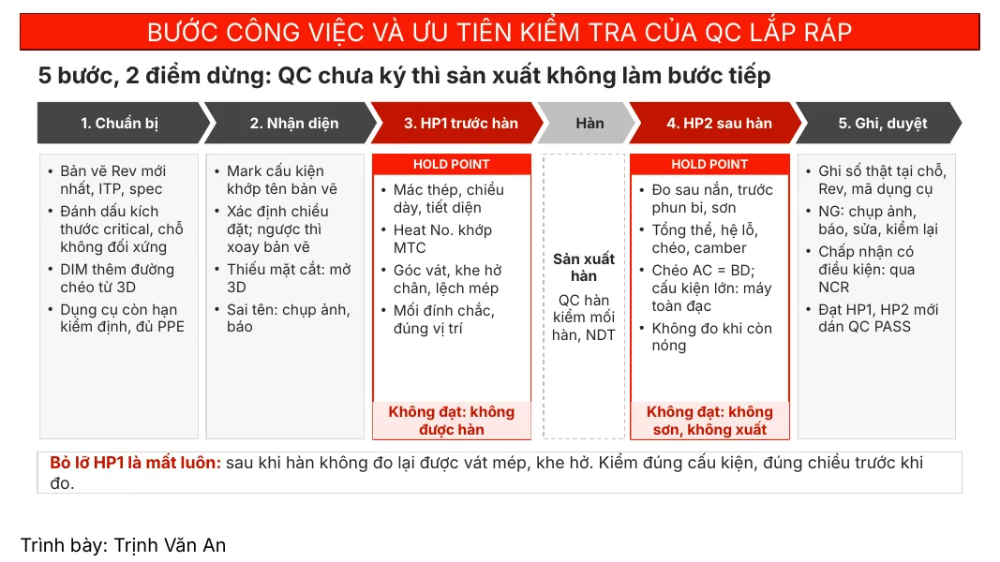
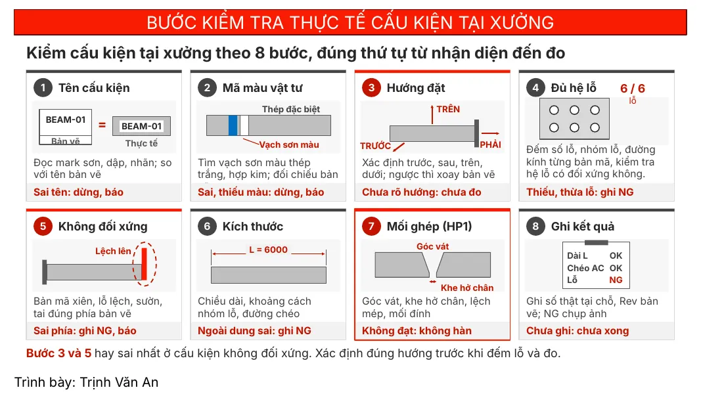
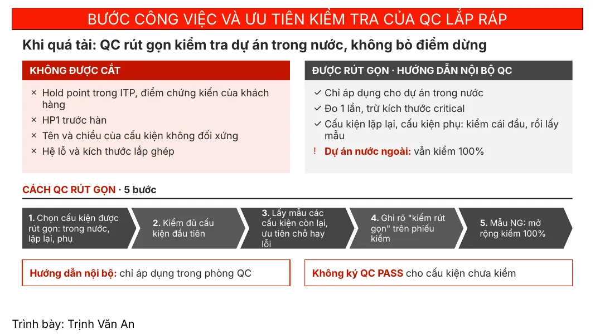
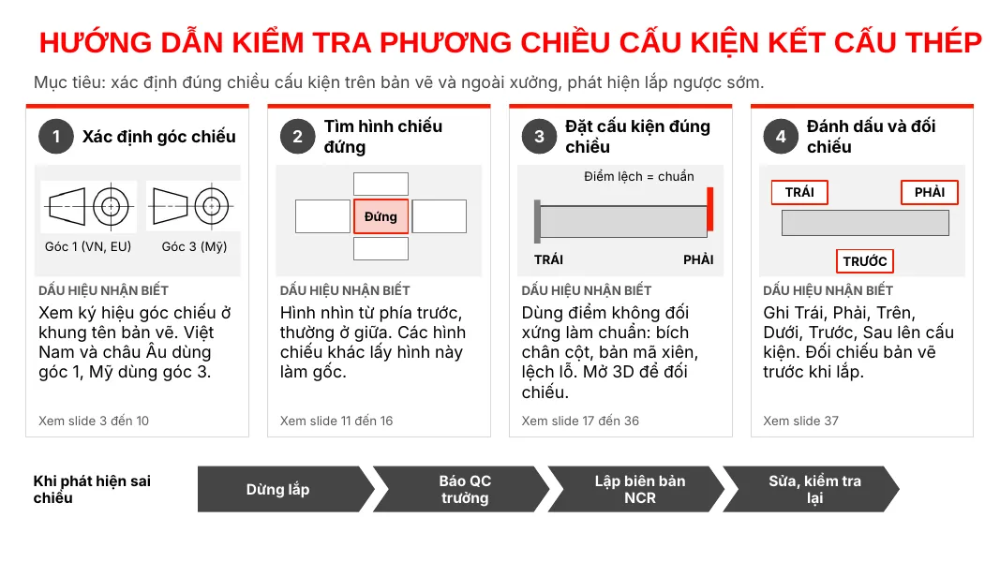
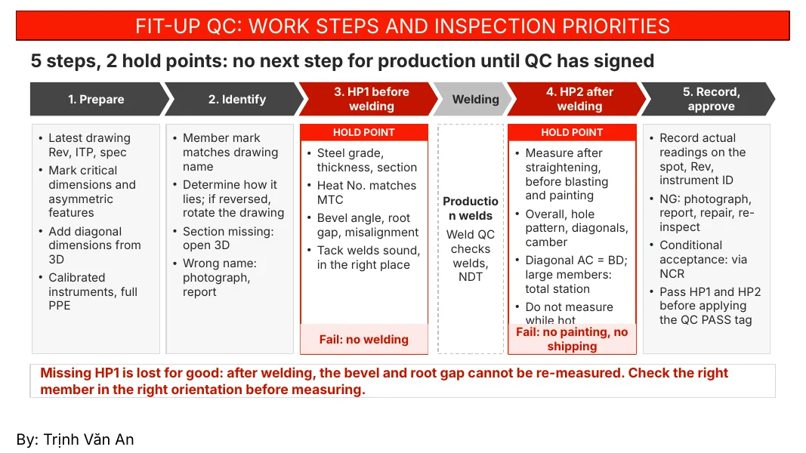
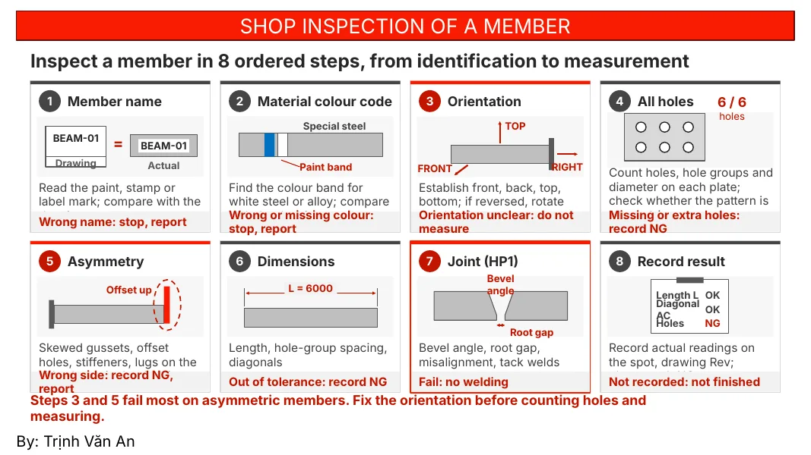
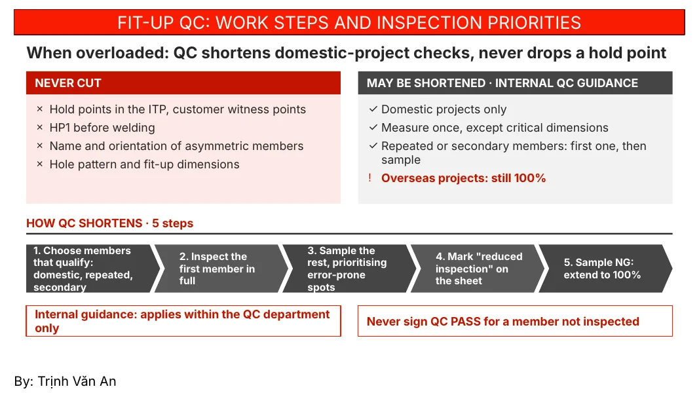
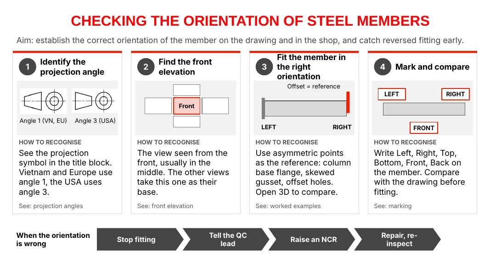

Khối lượng cấu kiện cần kiểm luôn nhiều hơn thời gian của QC. Vì vậy câu hỏi đầu tiên không phải "đo thế nào" mà là "kiểm cái nào trước". Nguyên tắc xuyên suốt: kiểm trước những lỗi khó sửa nhất ở công trường.
Cấp 1: chọn cấu kiện kiểm trước
- Theo dự án: dự án mà công trường ở xa, không sang sửa được thì kiểm trước và kiểm đủ 100%. Dự án sửa được tại công trường xếp sau, cấu kiện phụ có thể kiểm lấy mẫu.
- Theo loại cấu kiện, theo trình tự lắp dựng: cột, kèo chính, dầm chính, giằng, rồi cấu kiện phụ.
- Cùng mức ưu tiên thì cấu kiện xuất sớm hơn kiểm trước. Cấu kiện đang chờ hàn (điểm dừng HP1) kiểm ngay theo làn riêng, không xếp hàng.
Cấp 2 đến 5: kiểm gì trước trên mỗi cấu kiện
- Cấp 2, vật tư: mác thép, chiều dày, tiết diện. Sai vật tư là sai cả cấu kiện.
- Cấp 3, phương chiều: bản mã, sườn, tai, lỗ lệch. Sai chiều thì không lắp được.
- Cấp 4, hệ lỗ lắp ghép: đủ số lỗ, đúng đường kính. Thiếu lỗ rất khó xử lý ở công trường.
- Cấp 5, kích thước: lỗ chính, chiều dài, đường chéo. Lệch thì lắp không khớp.
Dự án không sửa được tại công trường: kiểm đủ 4 cấp trên mọi cấu kiện. Dự án sửa được, cấu kiện phụ lặp lại: kiểm đủ cấp 2 đến 4, cấp 5 lấy mẫu.
Quy trình 5 bước, 2 điểm dừng
Điểm dừng (hold point) nghĩa là QC chưa ký thì sản xuất không được làm bước tiếp theo.
- Bước 1, chuẩn bị: bản vẽ Rev mới nhất, ITP, spec; đánh dấu kích thước critical và chỗ không đối xứng; thêm đường chéo từ mô hình 3D; dụng cụ còn hạn kiểm định, đủ PPE.
- Bước 2, nhận diện: mark cấu kiện khớp tên trên bản vẽ; xác định chiều đặt, nếu ngược thì xoay bản vẽ; thiếu mặt cắt thì mở 3D; sai tên thì chụp ảnh và báo.
- Bước 3, HP1 trước hàn: mác thép, chiều dày, tiết diện; Heat No. khớp chứng chỉ MTC; góc vát, khe hở chân, lệch mép; mối đính chắc và đúng vị trí. Không đạt thì không được hàn.
- Hàn: sản xuất hàn; QC hàn kiểm mối hàn và NDT.
- Bước 4, HP2 sau hàn: đo sau nắn, trước phun bi và sơn; kiểm tổng thể, hệ lỗ, đường chéo, độ vồng. Chéo AC phải bằng BD; cấu kiện lớn dùng máy toàn đạc; không đo khi cấu kiện còn nóng. Không đạt thì không sơn, không xuất.
- Bước 5, ghi và duyệt: ghi số đo thật tại chỗ cùng Rev và mã dụng cụ; mẫu NG thì chụp ảnh, báo, sửa rồi kiểm lại; chấp nhận có điều kiện phải qua NCR. Chỉ khi đạt cả HP1 và HP2 mới dán nhãn QC PASS.

Bỏ lỡ HP1 là mất luôn cơ hội: sau khi hàn, không thể đo lại góc vát và khe hở chân. Luôn kiểm đúng cấu kiện, đúng chiều trước khi đo.
Kiểm cấu kiện tại xưởng theo 8 bước
Nhiều lỗi lọt qua không phải vì đo sai mà vì đo trước khi nhận diện đúng. Tám bước đi từ nhận diện đến đo, và mỗi bước nêu rõ khi nào phải dừng.
- Bước 1, tên cấu kiện: đọc mark sơn, dập hoặc nhãn rồi so với tên bản vẽ. Sai tên thì dừng và báo.
- Bước 2, mã màu vật tư: tìm vạch sơn màu của thép đặc biệt (thép trắng, hợp kim), đối chiếu bản vẽ. Sai hoặc thiếu màu thì dừng và báo.
- Bước 3, hướng đặt: xác định trước, sau, trên, dưới; nếu cấu kiện nằm ngược thì xoay bản vẽ. Chưa rõ hướng thì chưa được đo.
- Bước 4, đủ hệ lỗ: đếm số lỗ, nhóm lỗ, đường kính từng bản mã; kiểm tra hệ lỗ có đối xứng không. Thiếu hoặc thừa lỗ thì ghi NG.
- Bước 5, vị trí không đối xứng: bản mã xiên, lỗ lệch, sườn, tai phải đúng phía như bản vẽ. Sai phía thì ghi NG và báo.
- Bước 6, kích thước: chiều dài, khoảng cách giữa các nhóm lỗ, đường chéo. Ngoài dung sai thì ghi NG.
- Bước 7, mối ghép (HP1): góc vát, khe hở chân, lệch mép, mối đính. Không đạt thì không được hàn.
- Bước 8, ghi kết quả: ghi số đo thật tại chỗ cùng Rev bản vẽ; mẫu NG thì chụp ảnh. Chưa ghi nghĩa là chưa xong.

Bước 3 và bước 5 hay sai nhất ở cấu kiện không đối xứng: xác định đúng hướng trước khi đếm lỗ và đo.
Khi quá tải: rút gọn nhưng không bỏ điểm dừng
Hướng dẫn này chỉ dùng nội bộ trong phòng QC và chỉ áp dụng cho dự án trong nước; dự án nước ngoài vẫn kiểm 100%.
- Không được cắt: hold point trong ITP và điểm chứng kiến của khách hàng; HP1 trước hàn; tên và chiều của cấu kiện không đối xứng; hệ lỗ và kích thước lắp ghép.
- Được rút gọn: đo một lần (trừ kích thước critical); với cấu kiện lặp lại hoặc cấu kiện phụ, kiểm cái đầu tiên rồi lấy mẫu.
Cách rút gọn gồm 5 bước: chọn cấu kiện được rút gọn (trong nước, lặp lại, phụ); kiểm đủ cấu kiện đầu tiên; lấy mẫu các cấu kiện còn lại và ưu tiên chỗ hay lỗi; ghi rõ "kiểm rút gọn" trên phiếu kiểm; nếu mẫu NG thì mở rộng kiểm 100%. Không bao giờ ký QC PASS cho cấu kiện chưa kiểm.

Kiểm tra phương chiều cấu kiện: bốn bước
Mục tiêu là xác định đúng chiều cấu kiện trên bản vẽ và ngoài xưởng, phát hiện lắp ngược sớm.
- Xác định góc chiếu: xem ký hiệu ở khung tên bản vẽ; Việt Nam và châu Âu dùng góc 1, Mỹ dùng góc 3.
- Tìm hình chiếu đứng: hình nhìn từ phía trước, thường ở giữa; các hình khác lấy hình này làm gốc.
- Đặt cấu kiện đúng chiều: dùng điểm không đối xứng làm chuẩn như bích chân cột, bản mã xiên, lệch lỗ; mở 3D để đối chiếu.
- Đánh dấu và đối chiếu: ghi Trái, Phải, Trên, Dưới, Trước, Sau lên cấu kiện và đối chiếu bản vẽ trước khi lắp.
Khi phát hiện sai chiều: dừng lắp, báo QC trưởng, lập biên bản NCR, sửa rồi kiểm tra lại.

Các bài tiếp theo đi sâu vào từng bước: góc chiếu, đọc bản vẽ chế tạo, và các ví dụ thực tế.
There are always more members to inspect than hours in the day, so the first question is not "how do I measure" but "what do I inspect first". The guiding rule: check the defects that are hardest to fix on site, first.
Level 1: choose which members come first
- By project: where the site is far away and cannot correct defects, inspect first and at 100%. Projects where site repair is possible come later, and minor members can be sampled.
- By member type, following erection order: columns, main rafters, main beams, bracing, then secondary members.
- Within the same priority, members shipping earlier go first. A member waiting for welding (hold point HP1) is inspected immediately in its own lane, not queued.
Levels 2 to 5: what to check first on each member
- Level 2, material: steel grade, thickness, section. Wrong material means the whole member is wrong.
- Level 3, orientation: gusset plates, stiffeners, lugs, offset holes. Wrong orientation will not fit.
- Level 4, bolt-hole pattern: correct number of holes and diameter. Missing holes are hard to resolve on site.
- Level 5, dimensions: main holes, length, diagonals. Out-of-tolerance parts do not fit together.
Where defects cannot be repaired on site: all 4 levels on every member. Where they can, for repeated secondary members: levels 2 to 4 in full and level 5 sampled.
The 5-step routine with 2 hold points
A hold point means production may not take the next step until QC has signed.
- Step 1, preparation: latest drawing revision, ITP and spec; mark critical dimensions and asymmetric features; add diagonals from the 3D model; calibrated instruments and PPE.
- Step 2, identification: the member mark matches the drawing; determine how it lies, and if reversed, rotate the drawing; open 3D if a section is missing; wrong name means photograph and report.
- Step 3, HP1 before welding: steel grade, thickness, section; heat number matches the MTC; bevel angle, root gap, misalignment; tack welds sound and in the right place. If it fails, welding does not start.
- Welding: production welds; weld QC checks the welds and NDT.
- Step 4, HP2 after welding: measure after straightening and before blasting and painting; check overall dimensions, hole pattern, diagonals, camber. Diagonal AC must equal BD; use a total station for large members; never measure while hot. If it fails, no painting and no shipping.
- Step 5, record and approve: record actual readings on the spot with the revision and instrument ID; for NG, photograph, report, repair and re-inspect; conditional acceptance goes through an NCR. Only after both HP1 and HP2 pass is the QC PASS tag applied.

Missing HP1 is a lost opportunity: after welding you can no longer measure the bevel and root gap. Always confirm the right member in the right orientation before measuring.
Shop inspection of a member in 8 steps
Many defects slip through not because of a wrong measurement but because the member was measured before it was correctly identified. The eight steps run from identification to measurement, and each says when to stop.
- Step 1, member name: read the paint, stamp or label mark and compare with the drawing. Wrong name: stop and report.
- Step 2, material colour code: look for the colour band of special steel (white steel, alloy) and compare with the drawing. Wrong or missing colour: stop and report.
- Step 3, orientation: establish front, back, top, bottom; if reversed, rotate the drawing. Orientation unclear: do not measure yet.
- Step 4, complete hole pattern: count holes, hole groups and diameters on each plate; check whether the pattern is symmetric. Missing or extra holes: record NG.
- Step 5, asymmetric features: skewed gussets, offset holes, stiffeners and lugs must be on the side shown in the drawing. Wrong side: record NG and report.
- Step 6, dimensions: length, spacing of hole groups, diagonals. Out of tolerance: record NG.
- Step 7, joint preparation (HP1): bevel angle, root gap, misalignment, tack welds. If it fails, welding does not start.
- Step 8, record the result: write the actual reading on the spot with the drawing revision; photograph any NG. Not recorded means not finished.

Steps 3 and 5 are the most error-prone on asymmetric members: establish the correct orientation before counting holes and measuring.
When overloaded: shorten, but never drop a hold point
This guidance is internal to the QC department and applies only to domestic projects; overseas projects are still inspected at 100%.
- Never cut: hold points in the ITP and customer witness points; HP1 before welding; name and orientation of asymmetric members; the hole pattern and fit-up dimensions.
- May be shortened: measure once (except critical dimensions); for repeated or secondary members, inspect the first one, then sample.
The shortened routine has 5 steps: choose the members that qualify (domestic, repeated, secondary); inspect the first one in full; sample the rest, prioritising error-prone spots; mark "reduced inspection" on the inspection sheet; if a sample is NG, extend to 100%. Never sign QC PASS for a member that has not been inspected.

Checking member orientation: four steps
The aim is to establish the correct orientation on the drawing and on the shop floor, and catch reversed fitting early.
- Identify the projection angle: see the symbol in the title block; Vietnam and Europe use first angle, the USA uses third angle.
- Find the front elevation: the view seen from the front, usually in the middle; the other views take this one as their base.
- Place the member in the right orientation: use asymmetric features as the reference, such as the column base flange, skewed gussets and offset holes; open 3D to compare.
- Mark and compare: write Left, Right, Top, Bottom, Front, Back on the member and compare with the drawing before fitting.
When the orientation is wrong: stop fitting, notify the QC lead, raise an NCR, repair and re-inspect.

The following articles go into each step: projection angles, reading fabrication drawings, and worked examples.